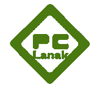

Sagardo ekoizpenaren
trazabilitatearentzako softwarea

Hasiera
Dokumentazioa
Instalatzaileak
Bestelako Baliabideak
Esteka Interesgarriak
Castellano
Euskera
Sagardo ekoizpenaren trazabilitaearentzako programaren
instalatzailea.
Sagardo ekoizpenaren trazabilitaearentzako programaren
instalatzailearen deskarga
Pc Lanak Informátika, S.L. - Galicia 18 - 20015 Donostia - San Sebastián- Tel.: 943 32 30 39 - Fax: 943 32 79 95 - S.a.t.: 943 10 04 23